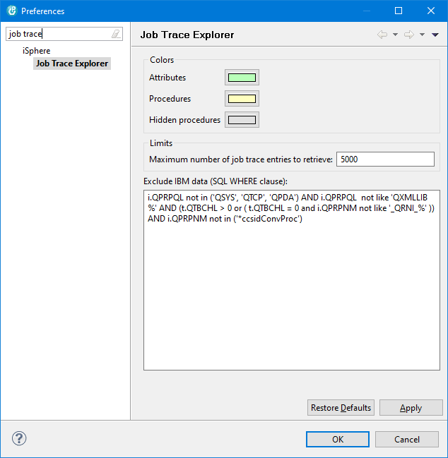

The available Colors options are:
| Attributes | - | Specifies the color that is used for highlighting attributes. |
| Procedures | - | Specifies the color that is used for highlighting procedures. |
| Hidden procedures | - | Specifies the color that is used for highlighting hidden procedures. |
The available Limits options are:
| Maximum number of job trace entries to retrieve | - | Use this option to specify the maximum number of job trace entries that are downloaded to the PC. You may run into an Out Of Memory Error, if this limit is to high. The actual number of items that can be downloaded to your PC depends on the amount of memory available. The initial default value is 5000. With RDP 8.0 on a PC with 32 GB Ram it was possible to download 25000 items. |
Other options are:
| Exclude IBM data (SQL WHERE clause) | - | Specifies the SQL WHERE clause that is used for excluding IBM data when downloading job trace entries to the PC. |